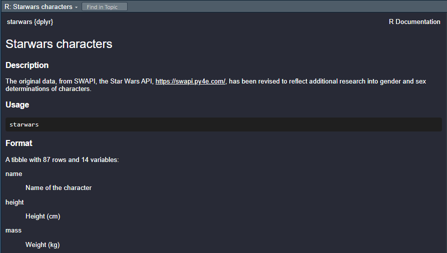
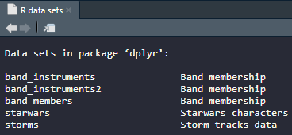

data(starwars, package = "dplyr")
my_starwars <- starwars
ls()[1] "my_starwars" "starwars" Think of this as your jump-start chapter. We’ll cover the essential definitions and walk through simple code snippets so you can start working with built-in datasets right away.
When you think of an R package, you’re most likely interested in the functions it contains.
While functions are essential to R, be aware that many packages also contain datasets that you can use to practice R coding. Because these datasets are part of a package, they’re sometimes referred to as built-in.
The starwars dataset contained in the dplyr package is popular.
Imagine you are an avid Starwars fan and want to do some R coding with data about Starwars characters.
So, what should you consider when using the starwars dataset?
This chapter demonstrates and then introduces key concepts about using starwars specifically and built-in datasets in general.
To use a dataset, the package that contains it must be installed.
For this chapter, it’s assumed the dplyr package is installed. If it’s not run: install.packages(“dplyr”).
data(starwars, package = "dplyr")
my_starwars <- starwars
ls()[1] "my_starwars" "starwars" These three lines of code represent a good practice for loading and preparing to use a dataset.
1st line: requests the dataset be put into the global environment (dataset loaded into the session)
2nd line: materializes starwars in the global environment and makes a copy named my_starwars
3rd line: lists the object now in the global environment
You can now make changes to my_starwars and then later, if needed, compare my_starwars to starwars to see the differences.
It’s a good practice to explore the structure and contents of a dataset before using it.
help()help("starwars", package = "dplyr")starting httpd help server ... doneWhen you run the code above, a new window titled “R: Starwars characters” is opened that displays information about the datasets. Here’s part of what you’ll see:

class()Another important function to use right away is class().
class(starwars)[1] "tbl_df" "tbl" "data.frame"The code above shows that starwars is a tibble, which is a modern version of a data frame.
There are many other functions you can use to explore the structure and contents of a dataset including: dim(), str(), summary(), and head().
Once a dataset is in the global environment, it can be read or updated.
base_r_starwars <- starwars[
starwars$species %in% c("Human", "Droid"), # Filter rows
c("name", "species") # Select columns
]
head(base_r_starwars) name species
1 Luke Skywalker Human
2 C-3PO Droid
3 R2-D2 Droid
4 Darth Vader Human
5 Leia Organa Human
6 Owen Lars HumanThe code above uses base R functions to create a new tibble named base_r_starwars, which contains information only for humans and droids.
dplyrIn the context of this chapter so far, imagine that you were just learning base R functions and using them on the starwars dataset. This means there has not been a neeed to make the entire dplyr package available to the R session.
Now, image you’ve decide to start learning dplyr functions. In particular, you’d like to again select information about humans and droids from starwars, but this time using dplyr functions instead of just base R functions.
Recall that earlier you verified the dplyr package is installed. (Otherwise, you would not have been able to access its starwars dataset.)
library()library(dplyr)
Attaching package: 'dplyr'The following objects are masked from 'package:stats':
filter, lagThe following objects are masked from 'package:base':
intersect, setdiff, setequal, unionThe code above runs the library() function on dplyr, making the package available to the session.
dplyr functionsdplyr_starwars <- starwars %>% filter(species %in% c("Human", "Droid")) %>% select(name, species)
head(dplyr_starwars)# A tibble: 6 × 2
name species
<chr> <chr>
1 Luke Skywalker Human
2 C-3PO Droid
3 R2-D2 Droid
4 Darth Vader Human
5 Leia Organa Human
6 Owen Lars Human The code above uses dplyr functions to create a new tibble named dplyr_starwars, which contains information only for humans and droids.
If you’ve found one dataset in a package that you like, it’s likely you might want to see if there are other datasets in that package.
data(package = "dplyr")The code above shows another use for the data() function. Now data() lists the datasets available in a package.

Many R packages include built-in datasets that are useful for learning and practicing R. These datasets are generally intended for instructional purposes, not for production data analysis.
Before using any dataset, it is good practice to explore its structure, variables, and documentation
In many cases, you will use library() to attach a package and make its functions available in your R session. In other situations, you may only want to load a dataset from a package into the global environment.
The data() function is the standard and recommended way to load a dataset into the global environment.
The data() function can also be used to list the datasets that are available in a package.